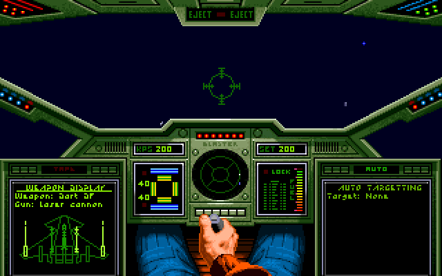
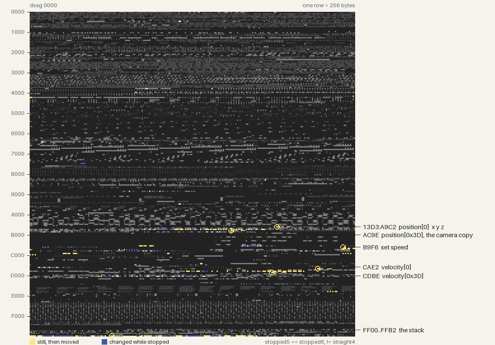
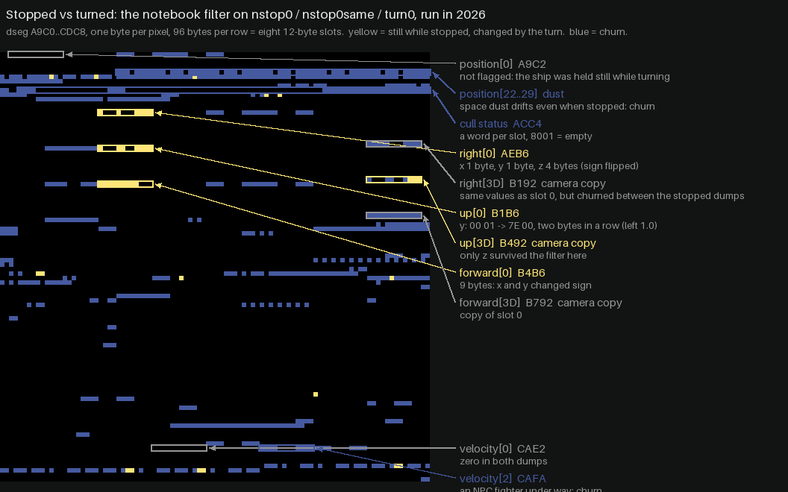
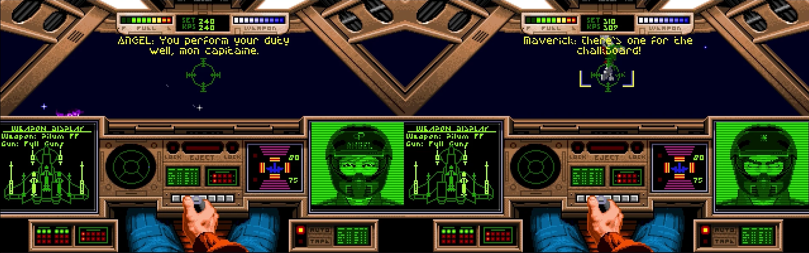

An 11 year journey to play DOS Wing Commander together
By danielrh
When we were kids, my brother Patrick and I would steer our space fighter with one of us on controls and the other on the lasers and afterburner boost. We always dreamed of playing the Wing Commander series cooperatively as wingmates rather than as a two headed hydra in a single craft.
In the beginning we were searching for where we were
On October 4, 2015 as I was playing the classic Wing Commander in Dosbox I realized the whole memory probably fit in that 640K Bill Gates apocryphally said “ought to be enough for anybody”. If I could dump the memory and identify the locations that held the X,Y,Z coords for the player & wingman we could let the network packets control the wingman.
The actual quote
“I have to say that in 1981, making those decisions, I felt like I was providing enough freedom for 10 years. That is, a move from 64 K to 640 K felt like something that would last a great deal of time. Well, it didn't.” Source
This presented a clear problem to attack: out of fewer than a million bytes how would we identify that location? I decided to simplify the problem by trying to empty the game of other entities. A stopped player shouldn’t change coordinates. We could snapshot the memory twice when stopped to identify “background” memory churn. Then burst forward and measure again. If we didn’t turn (mouse was disabled) we might only change one axis. The next problem was to find an empty region of space. We had to start without our wingman Paladin, since he would move with us. After a miserable mission, letting the nefarious space cats overwhelm Paladin and running back to the spacecraft carrier, the Claw, the next mission was primed for a flight through empty space. I launched and flew directly ahead until everything despawned and took the memory snapshots using the DOSBox MEMDUMPBIN debug-command.

Now I had to discover anything that had not changed between the memory snapshots where my star fighter was in the original position but things that had changed when my star fighter moved.
(snapshotorigin ⊙ snapshotlater) ∧ (snapshotorigin ⊕ snapshotmoved)
There were 35 distinct clusters of bytes that changed in the data segment. By inspecting these visually and looking for floats or small integer changes when I moved, I narrowed it down to a dozen locations it could be. I went to the chase camera view as well, and this helped to narrow it down to 13D3:A9C2. I had the DOSBox debugger add integers at that address with its SM command and that caused the ship to jolt forward to a new location.
CAE2, since thre were three 32 bit ints that zeroed out when the craft was stopped.

I had fun driving my ship around with the memory editor and reproduced it around the Claw and other NPC ships.
Then we searched for what we faced
I set it down for nearly a year but in September 2016 I decided to write a small tool to automatically compare DOSBox snapshots instead of using the vbindiff GUI only. Directionality turned out to be more difficult so I set down the problem for a few more months and picked it back up in November.
To find the memory location of the rotation, I needed to look harder. As it happened the vectors were made of 4 byte scalars with 256 as 1.0 and valid positive vector positions between 0 and 255. This meant that most small rotations only changed a single byte. However, fortune was smiling on me that day because of what appeared to be a programmer joke at the time. Wing Commander reserved 64 slots for entity properties. In hex this would span numbers from 0x00 to 0x3F. However the programmers decided to use 0x3F for temporary usages and place the camera in 0x3D. Since 3D graphics were still nascent, the programmers may have thought it a good laugh to write 0x3D every time they needed to manipulate the 3D camera. That put a temporary variable two slots from the camera variable. And up and forward were also next to one another. This gave a nice wide region where I could locate those single byte changes. The first byte I understood was the y of the right vector; the print window I put around it happened to cover the camera's copy of up, which is where the overwrite experiment started. Furthermore, I rolled the ship over, and tripped sign extension, which caused all 3 adjacent bytes to switch from 0x00 to 0xff. Between these two facts, I noticed the temporary and camera bytes in the hex dumps. Writing to them did not help, since they were overwritten every frame, but luckily I wrote some extra bytes to the next vector as well, which was forward[0]. This caused a noticeable shift in the starfield and meant that I could now start investigating the code.

I put memory watchpoints on the addresses and traced the vector-add function called by the per-ship physics function called by a per-frame function and eventually the main loop.
It was now time to locate the byte sequences in IDA and start annotating the game. Wing Commander Multiplayer was now just a matter of repeating these techniques and figuring out how to puppeteer one ship from another's input.
Then we searched for how to act
December 2016 had shattered my illusion that we would be able to drive Wing Commander with writes to global memory alone. The details of manifesting laser fire or heat seekers were far too complicated to puppeteer solely from the addresses. We would need to co-opt the very functions in the original game to get the most accurate experience. One initial thought was to “will” the program counter to the right place, but we would need a way to insert arguments and return back from whence we came. Moreover, many of the functions were in various overlays that required indirection to invoke. It appears that Borland had a different overlay per compilation unit (C++ file) and they were dynamically loaded in different locations depending on the path the player took beforehand.
Patrick and I had to figure out a good trampoline system to call functions with the correct arguments. We chose the “Loading WING COMMANDER” string at 13D3:0187 and eventually 13D3:0395 “Sorry, an error has occured while %s”[sic] to hold the trampoline.
We would have DOSBox push CS:IP to the stack, then relocate the instruction pointer to the string above.
00 terminates any string pointing here. pushf; pusha the game is mid-frame; leave registers as we found them xor si,si; push si argument: ship 0. Later thunks use mov si,imm16 for each argument call far 12D7:0156 through the stub, so it works wherever the overlay is loaded pop si; popa; popf cdecl: caller cleans the arguments retf back to the CS:IP DOSBox pushed
We noted with joy that this caused the laser cannons to activate.
In March of 2017, we found a predictable location in the main loop (0560:20E3) to hook so we would not need to worry about being in an unpredictable part of the game, and in July we located the do_damage function and prevented the game from calling it as the secondary player.
Then we tried to bring together fields from afar
In August of 2017, we authored the networking protocol which was a simple TCP client/server architecture with protobuf game messages. Every frame every ship's position would be sent from the leader plus fire events, despawning and damages. The client would reply with its own position, if any lasers were fired or if some cataclysmic event had happened (ejection, landed, died).
Each player would have their own craft as entity 0 and the other player as entity 1, which required a swap when receiving packets from the other emulator.
These packets modified memory directly or were added to a job queue of events that had to happen that frame.
We started with a very simple trampoline:
pushf pusha nop popa popf retf
When Borland's overlay loader swaps a code page in, it walks the chain of saved BP frames on the stack and patches any return address that points into an overlay. The hand-made stub had no frame, so the walk read garbage and the game died at random moments. This was a constant thorn in our side from October to December.
The fix was to make the trampoline look like a Borland function:
push bp mov bp, sp nop (0x90) ; welcome to the 0x90's pop bp retf
We configured DOSBox to notice when the program counter reached the nop and instead inject its call from the job queue of things that should happen. The job queue was based on what was necessary to make the game function correctly in a multiplayer scenario.
In October 2017 we noticed that ephemeral objects would be located in different slots for different players. Having the new hook from DOSBox also let us determine when the function had returned, so we could note down which numeric slot a new ship or projectile had been spawned into.
Ephemeral objects had their own spawn rules and could occupy shared areas of the 61 entity slots. We modified the location that ephemeral objects were placed in so we could confine them to slots 12 to 15 and keep multiplayer locations consistent.
In December we decided to change the client to store a mapping of server ship IDs to local IDs, so we could stop forcing the spawn function return. This allowed packets to translate between local and host IDs. Finally asteroids started to work in multiplayer.
In 2018 we focused on animating explosions, missiles, and autopilot.
The search continued for both success and defeat
In June of 2019 we noted the mission victory calculation was flaky and finicky. We decided to conduct a binary search to find the location of the actual victory point tally. We copied the entire 64K data segment across the network, and slowly cut it in half. After many bisections, we located 80 bytes at 13D3:D248 which held the mission tree. And in October we found the overall victory point counter at 13D3:C280 and mission numbers at 13D3:C255 and C256, which allowed us to select the mission to play from a dropdown, years later.
And finally the joy of combined words
In early 2020, we identified the function that played comm text. This allowed us to send chat over the network and hook typed chat directly into the system so it played using the wingman's VDU. It allowed a very immersive way to chat that reminded us of some of the frenetic sequences in the game.

Some final work in 2020 left the game in a playable state, but we were out of ideas on how to actually share the fun with friends. Expecting people to locate a copy of that old game, compile or download a strange version of DOSBox, share each other's public IPs and punch the firewalls and play together was sadly a bridge too far.
We had a few family playthroughs but the game rested on GitHub, mostly idle.
And in 2026, machine assisted development helped us laugh together
Until now. With the advent of widespread WebRTC, robust emscripten support, and a new system we put together called lobbylink, the time seemed right to revive the project and share it more widely.
lobbylink
I built https://github.com/danielrh/lobbylink which is a simple golang lobby system, depending only on a websocket library, that orchestrates peer to peer WebRTC connections. It can run on any small server and simply allows players to connect to one another using WebRTC and a shared room code. The server has a static allowlist of origins and can let browsers or client software in almost any language connect to it with a room code. The room code is used to locate other players with the same room code and they get notified of all joiners in that room. The server also runs coturn and mints TURN credentials in its joined reply, so players behind restrictive firewalls can join.
I ported over the transport to lobbylink and asked an LLM to configure the build scripts to target emscripten and take a GOG Inno Setup installer package of Wing Commander and unzip it and use it as data files for emscripten. The combination of these makes it possible to download Wing Commander from GOG, drag and drop it into the client-side browser storage, enter a room code, and play.
The game is playable at https://fireflyk64.github.io/dosbox/ and the emulator is at https://github.com/danielrh/wcmulti.
And as an added bonus I asked an LLM to add voice chat as well for realtime voice in game using a second WebRTC peer connection to carry audio, if people choose. And so we can fly and laugh together.